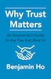

|
Benjamin Ho Economics PhD (Stanford University, Graduate School of Business)
Download my curriculum vitae (CV) in pdf.
|
Education
Stanford University Graduate School of Business 2001-2006
PhD Economics 2006,MA Education 2004,
MA Political Science 2004
Massachusetts Institute of Technology 1996-2000
M.Eng Electrical Engineering and Computer Science 2000,BS Economics 1999,
BS Mathematics 1999,
BS Computer Science 2000
Experience
Vassar College
Professor of Economics 2022-Associate Professor of Economics 2015-2022
Assistant Professor of Economics 2011-2015
Columbia University
Faculty Affiliate Center on Global Energy PolicyAdjunct Professor
Cornell University - Johnson School of Management
Assistant Professor of Economics 2006-2011White House - Council of Economic Advisers
Lead Economist for Energy/Transportation 2006-2007Morgan Stanley
Fixed Income Analyst 2000-2001Background
Ben Ho is a professor of economics at Vassar College and author of the book Why Trust Matters: An Economist's Guide to the Ties that Bind Us. Ho applies behavioral economics tools like game theory and experimental methods to tackle topics like apologies, identity, inequality and climate change. Before Vassar, he taught MBA students at Cornell (where he was selected as one of Poets and Quants 40 under 40), served as lead energy economist at the White House Council of Economic Advisers, and worked/consulted for Morgan Stanley and several tech startups. Professor Ho is also a faculty affiliate for the Center for Global Energy Policy at Columbia University. His research has appeared in outlets like Management Science and Nature: Human Behavior. Ho holds seven degrees from Stanford and MIT in economics, education, political science, math, computer science and electrical engineering.
Peer Reviewed Papers:
From Theory to Practice: A Viewpoint on Economic Indicators of Trust in Digital Health
with Felix Gille, Laura Maas, Divya SrivastavaForthcoming Journal of Medical Internet Research
Abstract: User trust is pivotal for the adoption of digital health innovation (DHI). In response, numerous trust-building guidelines have recently emerged targeting DHIs such as artificial intelligence. The common aim of these guidelines aimed at private sector actors and government policymakers is to build trustworthy DHI. While these guidelines provide some indication of what trustworthiness is, the guidelines typically only define trust and trustworthiness in broad terms—they rarely offer guidance about economic considerations that would allow implementers to measure and balance tradeoffs between costs and benefits. These considerations are important when deciding how best to allocate scarce resources (e.g. financial capital, workforce, or time). The missing focus on economics undermines the potential usefulness of such guidelines. We propose the development of actionable trust-performance-indicators (including but not limited to surveys) to gather evidence on the cost-effectiveness of trust-building principles as a crucial step for successful implementation. Moreover, we offer guidance on navigating the conceptual complexity surrounding trust and on how to sharpen the trust discourse. Successful implementation of economic considerations are critical to successfully build user trust in DHI.
Political Ideology of Nonprofit Organizations
with Baran Han, Zizhe XiaSocial Science Quarterly (2023)
Abstract: We provide a novel measure of nonprofit ideology based on semantic text analysis of public IRS filings. We match mission statements of the nonprofits to Congressional speeches to classify them on a political spectrum and validate our measure with established ideology scores and rankings generated from a large-scale online experiment. Using our measure, we explore the relationship between electoral competition and donation behavior. Our analysis shows that while there are donors that give strategically to countervail expected policy change post-election, the underlying trend is that donations move in sync with ideological shifts of the government.
Working Paper Version HereLink to Data and Replication Code on OSF
Do Investors Care about Corporate Apologies? Evidence from Chemical Disasters (w/ Sijia Fan, Qi Ge, Lirong Ma)
with Sijia Fang, Qi Ge, Lirong MaJournal of Economic Behavior and Organization (2023)
Abstract: This paper examines the stock market's reaction to corporate apologies. We construct an extensive database of corporate apologies issued for major chemical disasters between 1985 and 2017. Results from event studies and cross-sectional regressions suggest that 1) the average effect of an apology does not affect the implicated firm's stock price; but 2) type and timing of the apology are associated with significant abnormal returns. In particular, firms that shift the blame to others consistently experience positive abnormal returns, while firms who admit to making mistakes tend to face negative stock market reactions in the longer-term. Greater media coverage for the chemical spill is associated with a negative stock market response while greater coverage for the apology is associated with a positive stock market response. Our results have practical implications for corporate crisis management and improves our understanding of what makes an effective apology.
Toward an understanding of the economics of apologies: evidence from a large-scale natural field experiment
with Basil Halperin, Ian Muir, John ListEconomic Journal (Jan 2022)
Abstract: We conduct a nationwide field experiment over several months involving 1.5 million ridesharing consumers whose trips took significantly longer than expected and combine it with theory to deepen our understanding of the economics of apologies. Several insights emerge. First, apologies are not a panacea: the efficacy of an apology -- and whether it may backfire -- depend on how and when the apology is made. We find that First, aAcross all treatments, money consistently speaks louder than words. We find consistent evidence that the best form of apology efficacy critically depends onis to include a coupon for a future trip. Second, in some cases sending an apology is worse than sending nothing at all, particularly for repeated apologies. For firms, caveat venditor should be the rule when considering apologies. Second, across all treatments, money consistently speaks louder than words. For example, we find consistent evidence that the best form of apology is to include a cash coupon for a future trip. Finally, apology efficacy critically depends on the familiarity of the customer with the firm's product and non-monotonically on the severity of the bad experience.
NBER Working Paper 25676 hereOverhead and Efficiency of Non-profits
with Baran Han and Yujie FangApplied Economics Letters (2020)
Abstract: This paper investigates the efficiency of nonprofit overhead spending by estimating its marginal returns on total revenue using IRS data. To explore whether using the overhead ratio as a heuristic for non-profit operational quality is justified, we compare it with administrative efficiency, or the efficiency by which overhead is transformed into total revenues. We find that underinvestment on overhead may be explained by reputational concerns. Reputational concerns may be justified given a negative relationship between administrative efficiency and overhead ratio.
Energy Consumption and Habit Formation: Evidence from High Frequency Thermostat Usage Data
with Qi GeEconomic Inquiry (2019)
Abstract: Using minute-by-minute data from over 60,000 smart thermostats in households distributed across the United States, we analyze the persistence of energy consumption in response to external shocks. In particular, we consider the impulse response of shocks such as weather events, gasoline and other local energy prices, political action, and news coverage of energy-related stories on how people set their thermostats. This allows us measure the responsiveness of consumer energy-use behavior to external stimuli. The analysis will help develop our understanding of habitual behavior that gives insight into what effects long term change and what triggers the choice to reconsider ones passive choices. The results have direct policy implications on how conservation policies impact energy use--failure to understand the influence of habit on decision making can lead us to over-estimate the impact of short term policy nudges but underestimate the long run impact of small changes--and how changing trends in climate, in energy prices, in news coverage, and political action, impact consumer behavior.
Holding Up Half the Sky? Ethno-Gender Labour Market Outcomes in China
with Hua-yu Sebastian Cherng and Reza HasmathJournal of Contemporary China, 28 (2018).
Abstract: Studies looking at gender and ethnic minority outcomes in China’s labour market have generally suggested that women and minorities are separately experiencing a wage disadvantage relative to males and the Han majority respectively. But, what is the experience of this combined cohort, ethnic minority women? Using data from China’s 2005 one percent mini-census, we discern ethno-gender labour market outcomes by factoring education, labour force participation, working hours, age, family structure (e.g. married, number of dependents) and geography (e.g. urban/rural, bordering province). We surprisingly find that ethnic minority women are less disadvantaged in the labour market than Han women. This is largely due to smaller penalties linked to marriage and having children.
Rank Reversal Aversion Inhibits Redistribution across Societies
with Xinyue Zhou, Stephan Meier, Wenwen XieNature Human Behavior 1, (2017)
Abstract: Lack of equality in wealth has been ubiquitous and pervasive throughout history, despite well-documented evidence that people are averse to inequality. Historians and economists have long argued political explanations for the persistence of this state of affairs. Here, we provide a psychological mechanism for why people may perpetuate inequality. We designed an economic game called a redistribution game to measure preferences for preserving wealth hierarchies. Across four different cultures, while redistributing resources participants felt reluctant to reduce inequality if doing so would disrupt the existing hierarchy. This preference was strongest among a group of nomadic Tibetan herders living in primitive cultural settings. The preference for maintaining hierarchy accounts for a significant percent of the variance in our data and is comparable with the importance of factors of fairness, inequality and property rights. For example, when a proposed wealth transfer would disrupt existing hierarchies, adults across cultures were 50% more likely to reject the transfer even after controlling for all other features of the choice problem. Moreover, we show how this preference develops in children from 3 to 10 years old. Specifically, inequality aversion developing between 4 and 5 years of age, followed by a preference for hierarchy preservation that develops between 6 and 7 years of age. Our results indicate that human motives to preserve social order are innate and universal, consistent with evolutionary mechanisms to respect pecking orders within animal species to avoid in-group violence.
The Effects of Moral Licensing and Moral Cleansing in Contingent Valuation and Laboratory Experiments on the Demand to Reduce Externalities.
with John Taber, Greg Poe, Antonio BentoEnvironmental and Resource Economics (2016), 1-24.
Abstract: Recent field experiments show that peer information can induce people to reduce their production of negative externalities. Related work in psychology demonstrates that inducing feelings of relative culpability in one domain can induce spillover pro-social behavior in another domain. We use a contingent valuation and parallel lab experiment to explore patterns of cross-domain responses to norm-based interventions. Asymmetric responses between those whose impacts are above or below the norm are found to be robust across decision settings. Substantial heterogeneity in responses is observed across a number of dimensions not explored in large field experiments, raising questions about the universality of peer-information effects and the design of such programs.
The Cultural Transmission of Cooperative Norms
with Xinyue Zhou and Yan LiuFrontiers in Psychology : Cognitive Science 6:1554 (2015)
Abstract: People's cooperative behavior depends on their cultural environment, but what happens when they move from one culture to the next culture governed by a different norm? How the dynamics of culture-induced cooperation evolve over time has not been well understood. We expose lab subjects to a sequence of different subject pools while playing the canonical Berg et al. Trust Game. We find prior exposure to different subject pools does in fact influence cooperative behavior; first impressions matter—the primacy effect plays a stronger role than the recency effect; and selfish first impressions matter more than cooperative first impressions—selfish norms exert longer-lasting and greater influence on behaviors than cooperative norms. Moreover, three consecutive exposure to cooperative environments are needed to neutralize one exposure to a selfish environment. Our results have implications for managing corporate culture, as well as for optimizing personnel decisions.
Optimal Price Instruments in Voluntary Emission Markets
with Antonio Bento and Mario Ramirez BasoraResource and Energy Economics, Vol 41, Aug 2015, pgs 202-223
Abstract: We study the problem of an uninformed regulator who wishes to use a voluntary price instrument under varying degrees of uncertainty, specifically in the context of a carbon offset market. In this scenario, a regulator wishes to offer firms a contract that compensates private agents for producing carbon offsets while at the same time minimize minimizing adverse selection and welfare losses. Our main findings show that the first best is achievable under perfect information or free monitoring. We find that for positive costs of monitoring, we can identify the inefficiencies generated from the additionality problem created by problems of adverse selection, but the net social benefit of an offsets program is always positive.
Herd Journalism: Investment in Novelty and Popularity in Markets for News
with Peng LiuInformation Economics and Policy Volume 31, (June 2015), Pages 33-46
Abstract: Consumers of news care both about the novelty of the news they read, as well as how popular that news topic is with others. Editors choose what to report on based on consumer preferences and the coverage of their competitors. We build a continuous time model that predicts whether news providers invest in covering novel news stories or instead report on popular. We construct a dataset of cover stories to test the model and find that both novelty and popularity are associated with increased sales, but popular stories only have a lifespan of one to two weeks. We find that the impact of novelty has declined since 2006, and the lifespan of a story has shortened. While theory predicts that editors strategically alternate between reporting on novel stories and popular stories, we find evidence of positive serial correlation in the popularity of cover stories. Finally, news outlets often cover the same story. Theory predicts that competitive news outlets are more likely to pool on the stories they cover while news outlets with market power are more likely to separate.
Job acquisition, retention, and outcomes for ethnic minorities in urban China, Eurasian Geography and Economics
with Reza HasmathUniversity of Oxford China Growth Centre Discussion Paper 16: 1-35. (2012)
Eurasian Geography and Economics (2015)
Abstract: This article estimates wage differentials between ethnic minorities and the Han majority in China from 1989 to 2006. Interviews with minority actors and observations with various enterprises are included. While Han-minority wage differentials estimated with regression analysis show little evidence for minority disadvantages, both quantitative and qualitative evidence looking at the process of minority labor acquisition and retention finds that minorities are disadvantaged in the job search process. The article assesses potential factors for disadvantages in China’s labor market such as discrimination, social network capital and working culture.
Heterogeneous Effects of Peer Informational Nudges on Pro-Social Behavior
with Jiayi BaoBE Press Journal of Economic Analysis and Policy (2015)
Abstract: Numerous experimental studies of informational nudges both in the lab and the field have demonstrated not just that informational nudges are effective policy tools for influencing behavior, but also that nudges have heterogeneous impacts that differ depending on the characteristics of the person involved and the situation. We adapt Andreoni’s theory of warm glow impure altruism to account for how altruism motives responds differently depending on the disposition of the person and the situation. The model explains both positive spillovers (moral consistency) and negative spillovers (moral licensing) for behavioral interventions, and we derive implications not just for behavioral policy interventions but also for tax policy.
Apologies as Signals: With Evidence from a Trust Game
Management Science (2012) (Special Issue for Behavioral Economics) 58 (1), pp. 141-158Online appendix
Abstract: Apologies are a previously understudied social institution integral in the maintenance of social relationships. Their application ranges from corporate culture to political systems to legal settings. This paper formulates a game theoretic signaling model using rational agents with two-dimensional type that serves as a framework for understanding apologies and their use. An existence result that extends single-crossing is established. The theory is then tested using a novel variant of the trust game experiment, and used to assess the impact of apologies in medical malpractice litigation.
It was suggested that I post my apology poster made from Powerpoint as an example for others who have to prepare a conference poster.
An Alternative Perspective on Inequality and Health
with Sita SlavovEconomics Bulletin (2012), Vol. 32 No. 4 pp. 3182-3196
Abstract: While much attention has focused on health disparities between socio-economic groups, most health inequality actually occurs within socio-economic groups. We examine trends in overall health inequality – measured by realized length-of-life inequality – through the lens of social justice, similar to traditional analysis of income inequality. We find that throughout most of the length-of-life distribution, inequality has declined dramatically over the past century. It has continued to decline even in the past 40 years, a period over which it is generally thought that income inequality has risen considerably. Most of the decline in length-of-life inequality appears to be driven by reductions in inequality within socio-economic groups.
What’s an Apology Worth? Decomposing the effect of apologies on medical malpractice payments
with Elaine LiuJournal of Empirical Legal Studies (December 2011) Vol 8, s1, pp179-199.
Abstract: Past studies find that apologies affect the outcomes of medical malpractice litigation, but such studies have largely been limited to laboratory surveys or case studies. Using Following Ho and Liu (2010) we use the passage of state-level apology laws that exclude apologies from being used as evidence in medical malpractice cases, we and estimate that apologizing to a patient in cases of medical malpractice litigation would reduces the average payout by $31,000. We consider the economic. This paper focuses on the mechanisms by which the apologies operates and by looking at sub-samples;, we find that the effect is concentrated on cases involving obstetrics and anesthesia, for cases involving infants, and for cases involving improper performance by the physician rather than on neglect.
Does Sorry Work? The Impact of Apology Laws on Medical Malpractice
with Elaine LiuJournal of Risk and Uncertainty (2011) Volume 43, Number 2, 141-167
Abstract: Legal scholars identify a "vicious cycle" where doctors are trained never to apologize to patients for fear of getting sued, but patients often report that they sued their doctors only because they never received an apology. Legislation in 35 states have made apologies inadmissible in court for civil litigation. Differences in differences estimates find that this potentially policy reduces litigation by over 30% and that the reductions occur in precisely the areas predicted by theory.
Focal points in coordinated divergence
with Chip Heath and Jonah BergerJournal of Economic Psychology 27 (2006) 635-647
Abstract: We explore situations of coordinated divergence, wherein some people coordinate on a shared cultural practice that diverges from the practice of others. Previous literature on individual drives for uniqueness or difference cannot explain coordinated divergence because it leads to a prediction of idiosyncratic differentiation. Using Schelling's original coordination games as a starting point, we provide experimental evidence that people can effectively solve problems of coordinated divergence. We also discuss why coordinated divergence often takes the form of choosing opposites (long hair/short hair, red/blue, etc.).
Books:
Why Trust Matters? An Economist's Guide to the Ties that Bind Us.
published by Columbia University PressReviews, interviews podcasts at https://whytrustmatters.com

Order here
Relatioships form the basis of civilization, and trust is the basis of relationships. This book demonstrates why economies rely on trust and have always relied on trust from pre-modern tribes to social media and blockchain, and how the tools of economics can illuminate trust in ways complementary to how other social sciences perceive it. This book draws on economic research in game theory, behavioral economics, experimental economics, to trace the history of trust, from the advent of religion to the development of the rule of law, and looks at how trust functions today undergirding institutions like our money supply, like medicine, like science, and more.
Book Chapters and Discussion Papers:
State Apologies and the Rehumanization of Refugees, Indigenous and Ethnic Minority Groups
with Reza Hasmath and S. Kay-ReidResisting the Dehumanization of Refugees: A Transdisciplinary Perspective (2024)
Abstract: Statistics focusing on annual household-level income indicate that inequality has increased in the United States in recent decades. Are these measures accurate? Inequality has traditionally been calculated in the United States in terms of annual cash income alone, but other, more comprehensive points of measurement should be considered. For maximum accuracy, income should include the value of in-kind benefits and be measured over a lifetime rather than a year. But even this adjusted number is inadequate to assess fairness, which requires looking at a broader picture of overall well-being that includes income mobility, access to education, consumption, leisure, and health. Additionally, we must develop better measures of opportunity, which is a more accurate indicator of well-being than income distribution. Broadening the definition of and approach to inequality would help build more opportunity and result in more useful policy.
Religion and the Economics of Trust
forthcoming Trust and the Franciscan TraditionAbstract: Trust is a concept that is important to both the study of economics and the study of religion. In this chapter we examine the history of how human institutions developed to facilitate trust through an economic lens. These institutions tend to facilitate trust by helping members of a community find other trustworthy individuals and by creating incentives for good behavior. We utilize a simple two step game theory model that economists use to study trust. We use the model to examine three types of human institutions, the practice of social exclusion, the belief in divine punishment, and the use of ritual to signal membership in a community.
The Transportation Sector: Energy and Infrastructure Use
with Ann WolvertonEconomic Report of the President 2007
The transportation sector accounts for the majority of the petroleum consumed in the United States and whether plane, train, ship, or automobile almost all transportation is powered by petroleum. Understanding the petroleum market, and the ways in which consumers and firms respond to changes in world oil prices, is key to understanding the transportation sector. In addition to petroleum, the transportation sector also relies heavily on infrastructure.
Trust and the Law
with David HuffmanResearch Handbook on Behavioral Economics and the Law
Abstract: Macro studies show that generalized trust in a society is a key component of economic growth, while micro studies show that trust which maintains relational contracts serves as a crucial complement and substitute to formal laws and enforcement when contracts are incomplete. We survey the literature on how trust maintains informal contracts, and turn to the experimental literature to uncover the mechanisms through which trust operates.
Internal Carbon Accounting at a Small Liberal Arts College
with A. Hall , S. Bedecarre Ernst, J. Falino, M. Cunningham, J. MillerAbstract: As colleges and universities pursue greenhouse gas reductions, it has become clear that some approach is necessary for putting a price on carbon emissions and communicating that cost to energy users on campus. A carbon charge or carbon tax is one approach to establishing a price signal to which the community could respond in making energy use decisions. This approach has been widely used in the context of corporate and state governance. We investigated the theoretical factors that should influence implementation of a carbon charge, including alternative forms of collecting and distributing funds, at a small liberal arts college. Because of the scale of data collection and accounting at an institution such as this one, we propose that a hybrid approach, wherein administrative budgetary units are charged for carbon emissions, and that fund is partly used to support a revolving green fund and partly paid back to good performers, would be likely to help reach GHG reduction goals, as well as social responsibility goals, at a small college.
Paper available hereSignaling Identity in Social Networks: A Model of Symbolic Consumption
with Jonah Berger and Yogesh JoshiMSI Working Paper 11-104
Abstract: Motivated by experimental evidence, we construct a model of how identity shapes preferences. People consume not only physical goods but also social interaction. Consumers therefore have both intrinsic motivations (preferences for consumption) and extrinsic motivations (how choices impact social interaction) for their choices. Theory demonstrates how the distribution of knowledge in a network, the structure of the social network, the visibility of a good, and the distribution of intrinsic preferences all influence the supply and demand of symbolic goods even when such goods are cheap.
Measuring Inequality: One Size Does Not Fit All
with Sita SlavovAEI Perspectives April 28, 2014
Abstract: Statistics focusing on annual household-level income indicate that inequality has increased in the United States in recent decades. Are these measures accurate? Inequality has traditionally been calculated in the United States in terms of annual cash income alone, but other, more comprehensive points of measurement should be considered. For maximum accuracy, income should include the value of in-kind benefits and be measured over a lifetime rather than a year. But even this adjusted number is inadequate to assess fairness, which requires looking at a broader picture of overall well-being that includes income mobility, access to education, consumption, leisure, and health. Additionally, we must develop better measures of opportunity, which is a more accurate indicator of well-being than income distribution. Broadening the definition of and approach to inequality would help build more opportunity and result in more useful policy.
Working Papers:
Fear and Favoritism in the Age of Covid-19
with Baran Han, Inbok Rhee, Chrys Tabakis revise and resubmit Polical BehaviorAbstract: How and why do epidemics affect exclusionary attitudes? With the recent spread of COVID 19, the news media has documented a rise in racism in many countries yet, existing studies show that the impact of disasters such as epidemics on group bias is not clear cut, i.e., they may either strengthen or weaken ingroup versus outgroup bias. In this study, we conduct a survey experiment on a nationally representative sample of 4,000 individual respondents in South Korea in order to better understand the mechanisms behind the positive or negative impact of disasters on the public's exclusionary attitudes. Specifically, we use the context of COVID 19 to test how evoking emotions of fear vs hope affect respondents' attitudes toward in groups and out groups and examine possible channels including positive and negative reciprocity, altruism, trust in others, patience, and risk aversion. By exploiting the unique social context of South Korea, we are able to parse out the differential impact of outgroup ethnic versus national identities. Finally, by incorporating not just perceptual or attitudinal measures but also tangible behavioral measures measured over time, we are able to capture the intensity and persistence of our treatment effects.
The Strategy of Explanations
with Sean McCoyAbstract: To better understand the strategic aspects of human decision-making, we conduct a power-to-take game in which takers are required to send messages explaining their actions to receivers. We vary the types and timing of information takers have available to them to investigate the roles that empathy and deceptive framing play and determine that takers who have more information tend to act and explain themselves strategically. We also find that receivers prefer to interact with female takers even though all interactions are anonymous. These findings suggest there is value in explanations that is often overlooked in modern analyses of human decision-making.
Request Working PaperDivergence in Cultural Practices: Tastes as Signals of Identity
with Jonah Berger and Chip HeathAbstract: Divergence is pervasive in social life: people select different tastes to distinguish themselves from others, and they abandon tastes when others adopt them. We propose an identity-signaling approach to divergence; people diverge to signal their identity to facilitate social interactions. Tastes gain value through association with groups or types of individuals, but become diluted when members of more than one type hold them. Consequently, different types of people will diverge in the tastes they select, and they will abandon tastes adopted by members of other social types.
Contracting for Trust: are Trustworthiness a Substitute or Complement for the Law?
with Evsen TurkayAbstract: The relationship between trust and the legitimacy of institutions has been analyzed in fields ranging from institutional theory in sociology, political science, psychology and economics. Economic studies (Knack and Keefer, 1997; La Porta et al., 1997, 1998, 2008; Zack and Knack, 2001; Algan and Cahuc, 2010; Ho and Hoffman, 2013) have shown that understanding the relationship between trust and the rule of law has important implications for understanding development, investment decisions, and the distribution of wealth. Trust between investors and entrepreneurs is an important facilitator of investment and production. Campos-Ortiz et al (2012) found that experimental subjects coming from countries with higher levels of trust devote more resources to production and are more likely to refrain from theft. Despite the importance of the subject, there has been little study on how institutional trust affects contracts are written. Our paper analyzes the effect of institutional trust on contract structures, specifically on the way gains are shared, by developing an investment game in which subjects contract on how to share the surplus. We vary institutional trust by providing a dispute resolution system that can accommodate contract breach by the agent, assigning some of our subjects to a game in which judges can be bribed and others where this is not possible. We analyze the differences in contracts that arise as a result of the different environments, and look at the total investments in the two groups. We compare our experimental findings to the analytical predictions given by a behavioral game theory model that accounts for fairness, reciprocity and social norms.
Paper available upon request.
The Effect of Financial Status on Political Views
with Sita SlavovAbstract: While it is taken as conventional wisdom that political beliefs depend on financial circumstance, the identification of this association is fraught with confounds. Taking advantage of a novel identification technique, we use variation in interviewing timing from the Genreal Social Survey, to identify the relationship between weatlh and political attitudes.
Paper available upon request.
Work in Progress:
Fear and Medical Testing (with Zoey Chopra)
Favors (with Ken Livingston)
Loss Aversion and Altruism (with Mathew Nagler)
The price of immigration (with Ed Lazear and Korok Ray)
Can Games teach Recycling (with Suchen Zhu)
Strategic Accusations in the Among Us Game (with Iris Li)
Selected Media Interviews: (see CV for more)
NPR - How Cheap Solar Could Save the World Feb 2020
Freakonomics - How to Optimize your Apology Oct 2018
NPR Economics of Apologies Oct 2018
Radio Interview for Science for the People
WAMC Public Radio Academic Minute - Political Apologies
WNYC Takeaway - Why it's not easy being green
Selected Popular Writing: (see CV for more)
Testimony on Public Service for Congressional Commission Inspire To Serve
Vox EU - How firms should apologize
How I work- Lifehacker
NY Times Op-ed on Solar Power Subsidies
Story Economics for Quartz
Nostalgia Economics for Quartz
Vox EU - Science of Apologies with Experimental Evidence
US News Column - Bright Side of Higher Tuition
US News Column - End of Manufacturing Jobs
AEI Perspectives : Measuring Inequality
Health Inequality on American Magazine
NerdWallet blog
Online Lectures on Environmental Economics as part of the facultyproject
Guest Post on NY Times Freakonomics Blog
On Climate Policy Cornell Magazine
Column in Chronicle for Higher Education - On the Market
Column in Chronicle for Higher Education - Taoism and the Job Market
Column in Chronicle for Higher Education - Rationalizing Anxiety
Selected Media Mentions: (see CV for more)
Intriguing Experiment Reveals a Fundamental Conflict in Human Nature - Ars Technica July 2017
Help thy neighbor only so much - Public Radio International July 2017
Study finds humans don't like sharing wealth. Daily Mail 13 July 2017
Talk at the Rubin Museum on Buddhism and the Behavoiral Economics of Climate Change
Interview for Boilerplate Magazine about the Behavioral Economics of Art
NPR Planet Money - when the president wasn't allowed to say dependence on foreign oil
Technology Review on Solar Power
Insider Higher Ed on online education
NCPA on Health Inequality
Economics of Apologies - Cory Doctorow - Boing Boing
About me in Seed Magazine
Apologies in Wall Street Journal
Marginal Revolution on Health Inequality
Email:
beho@vassar.edu
Phone:
650-867-8270
Personal Home Page:
http://www.benho.org